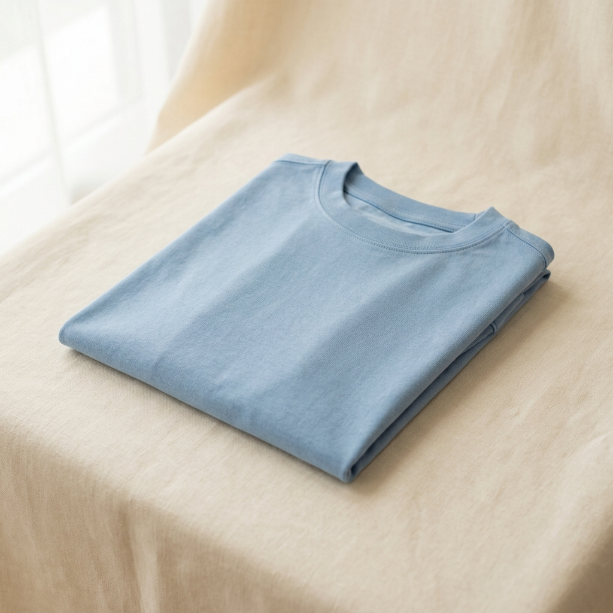

CATALOG INTELLIGENCE
Where should we fix the catalog?
Turn search demand into discoverability with better catalog data.
"Great fashion
should be easy to
find."
inventory_2
Products Audited
200
10 core fashion categories
verified
Average Health Score
90.3
/100
▲ +12% vs last audit
search
Queries Analyzed
40
230.1k monthly impressions
auto_awesome
Priority Opportunities
34
High
impact
Actionable catalog gaps
bolt
Today's Focus
High
Impact
"oversized t shirt men"
9,200 searches · 6% coverage · 17 listings to fix

Better discovery.
More sales.
Catalog Health Distribution
200
products
Excellent (85-100)
142 (71%)
Good
(70-84)
34 (17%)
Needs
Attention
19 (10%)
Critical
(< 50)
5 (2%)
Root Cause Classification
40 queries
Attribute Gap
22 (55%)
Inventory Gap
12 (30%)
No Catalog Gap
6 (15%)
warning
Needs Attention
Immediate ActionSearches with severe catalog gaps requiring immediate catalog team intervention
Loading high-priority catalog attention searches...
Top Opportunities
Search problems with the strongest catalog-driven improvement potential
“
Small catalog fixes can unlock a big difference in how people discover fashion.
Q
CatalogIQ
Intelligence